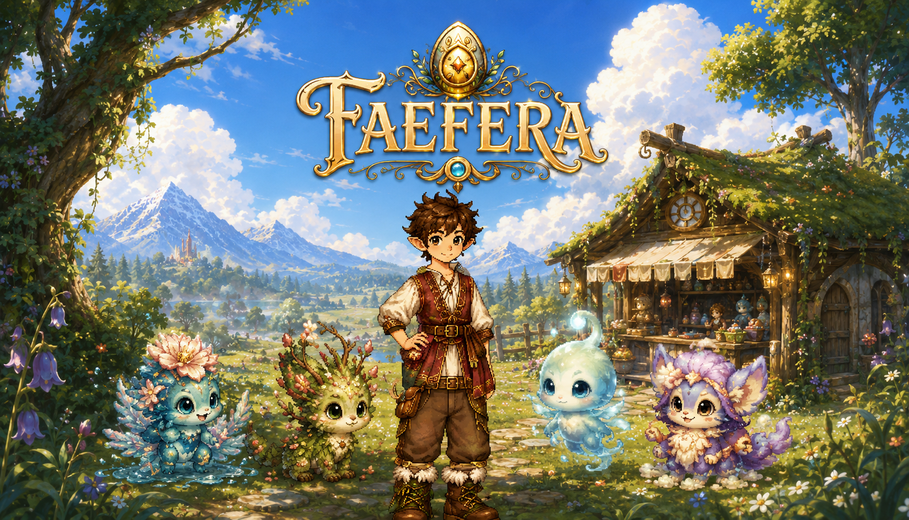
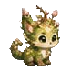
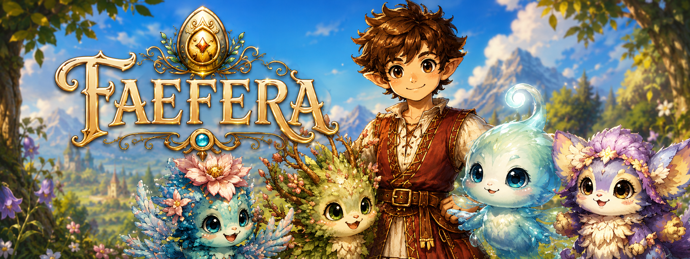
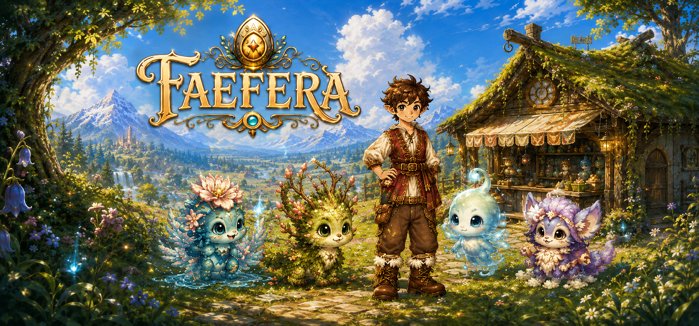

Hatch a companion. Build a home. Let the world unfold.
A cozy fantasy sandbox about mysterious eggs, magical baby companions, freeform building, crafting discoveries, gardening, digging, and exploring a connected world.
Pre-alpha · Godot 4.7.1 · active development
A gentler kind of adventure
Begin with an egg. Build a home. Let the world unfold.
A new adventure begins with character creation, followed by a short journey into the world and the discovery of a natural starter nest. Choose one of four mysterious eggs, watch your new companion hatch, and give that individual Faefera a name of your own.
There is no traditional combat loop. Progress comes from exploration, building, gardening, crafting, digging, caring for companions, reshaping the world, and learning how its different places fit together.

Your adventurer
Create a fae explorer that actually looks like yours
The character creator uses a layered avatar system with multiple body presentations, hairstyles, outfits, cloaks, shoes, accessories, palettes, and modular parts that combine into the in-game adventurer.

Discovery should feel magical
Eggs wobble, crack, hatch, and become somebody
Eggs are discoveries in the world, not simple menu unlocks. When the right conditions are met, an egg comes alive with a wobble-and-hatch sequence, revealing a baby Faefera the player can name. The personal name you choose becomes the companion identity that matters most.
Different Faefera can be discovered through eggs and exploration. Their appearance can vary while remaining recognizably the same kind of companion, with a palette-channel rendering system being prototyped around the color variations already established in Faefera's creature compendium art.


Companions, not combat units
Every baby Faefera should change how you explore
Faefera are companions and helpers rather than combat units. Their abilities are being designed around exploration, gathering, gardening, construction, terrain, and everyday life in the world.

One connected world
From the Sunny Meadow to the places beneath and beyond it
The current demo world is built around four connected identities: Sunny Meadow, Whisperwood, Shallow Crystal Caverns, and Frostedge. Each is part of the same side-scrolling world rather than a separate level.
Day-and-night atmosphere, biome transitions, diggable terrain, player-made structures, and continuous traversal are being refined together. The goal is a world you can explore, reshape, save, revisit, and keep changing without it feeling stitched together.

Build it your way
A cozy sandbox where a home can keep evolving
Gather materials, shape terrain, build a first shelter, and keep remodeling it into something personal. Faefera's construction system is being built around freeform pieces rather than fixed house prefabs, with fine placement intended to support rooms, towers, balconies, beams, walls, doors, mixed materials, and asymmetrical designs.
The goal is not simply to prove that pieces can be placed. Building should feel good enough that you want to move a doorway, redo a roof, add another room, and keep improving the same home. Digging follows the same philosophy: reshaping the underground should remain coherent even during long excavation sessions.

A different kind of challenge
A world without a traditional combat loop
Environmental challenges can still matter, but Faefera is not built around fighting enemies or turning companions into battle units. The focus stays on exploration, discovery, problem-solving, building, crafting, caring for companions, and creating a place worth returning to.
